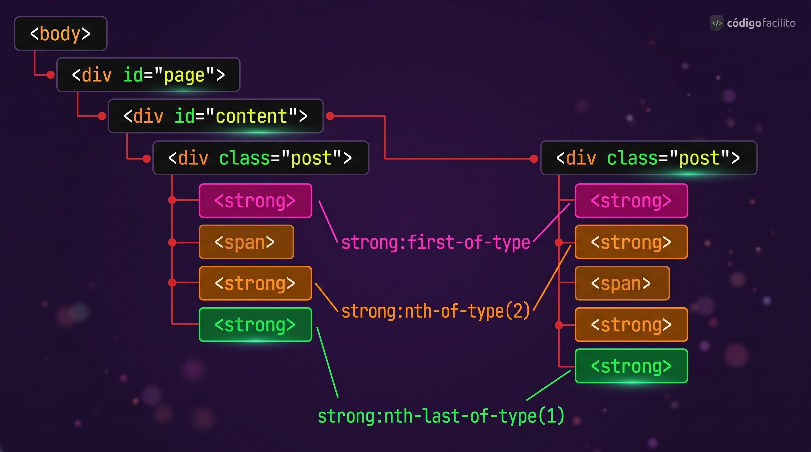

¿Qué es una pseudoclase CSS?
Se utilizan para hacer referencia a elementos HTML que tengan un cierto comportamiento concreto. Volvamos a recordar el esquema general de sintaxis de CSS, donde ahora añadiremos las pseudoclases, que se definen añadiendo dos puntos antes del nombre de la pseudoclase concreta.

Pseudoclase de interacción
Se utiliza para aplicar estilos cuando el usuario pasa el cursor del ratón sobre el elemento.
a:hover { color: red; }
Pseudoclase de interacción
Se utiliza para darle feedback visual al usuario al hacer clic en un elemento.
a:active { color: blue; }
Pseudoclase de interacción
Se activa cuando un elemento recibe el foco al seleccionarlo o navegar con Tab.
input:focus { border: blue; }
Pseudoclase de interacción
Se activa si el elemento o cualquiera de sus hijos directos tiene el foco activo.
form:focus-within { ... }
Pseudoclase de interacción
Muestra el indicador de foco inteligente solo cuando se navega mediante teclado.
btn:focus-visible { ... }
Pseudoclase de enlaces
Representa cualquier elemento que actúe como un enlace (visitado o no).
nav :any-link { color: cyan; }
Pseudoclase de enlaces
Selecciona enlaces que aún no han sido visitados por el usuario actual.
a:link { color: orange; }
Pseudoclase de enlaces
Selecciona enlaces que el usuario ya ha visitado previamente en su navegador.
a:visited { color: purple; }
Pseudoclase de enlaces
Se activa cuando un elemento tiene un ID que coincide con el ancla de la URL.
section:target { bg: yellow; }
Pseudoclase estructural
Selecciona elementos basándose en el idioma especificado en su atributo lang.
p:lang(es) { quotes: "«" "»"; }
Pseudoclase estructural
Aplica estilos según la dirección del texto (izquierda a derecha o viceversa).
:dir(rtl) { direction: rtl; }
Pseudoclase estructural
Representa el elemento raíz del documento (suele ser la etiqueta <html>).
:root { --main-color: #0d; }
Pseudoclase estructural
Selecciona el elemento contenedor sombra desde dentro de su propio Shadow DOM.
:host { display: block; }
Pseudoclase de estado
Selecciona elementos de formulario activados como checkboxes o radio buttons.
input:checked { accent: green; }
Pseudoclase de estado
Aplica estilos a cualquier elemento que se esté visualizando en pantalla completa.
video:fullscreen { width: 100vw; }
Pseudoclase de estado
Selecciona un elemento que esté en un estado donde intercepte interacción (ej. diálogo).
dialog:modal { bg: white; }
Pseudoclase de estado
Se utiliza principalmente en reglas de impresión para seleccionar la primera página.
@page :first { margin: 2cm; }
Pseudoclase estructural
Selecciona un elemento que sea el único hijo de su contenedor, sin hermanos.
li:only-child { color: green; }